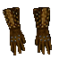
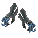
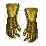
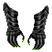

| Picture | Name | Description | What it does | Where it's from |
 |
Leather Gauntlets | A Pair of leather gauntlets, lined with iron barbs | +2 | Found in Dt, Maeling caves |
 |
Dragon gauntlets |
A set of wire intricate studs and dual razor sharp eight inch blades
(Level 10 req) |
+3 | Found on Red Dragon, and off Ninja's. |
| Snr Ninja gauntlets | A set of wire intricate studs and dual razor sharp eight inch blades
(Level 12 req) |
+6 | Found off Snr ninja in dark tower | |
| Improved red dragon gauntlets | A set of wire intricate studs and dual razor sharp eight inch blades | +5 | Improved gauntlet quest | |
 |
Vamp Gauntlets | A pair of griffon claws mounted on hand grips and honed to a razor sharp edge
(Level 16 req) |
+5 Power weapon |
Trade Vamps heart for it on the top floor of Dt |
 |
Katsumo Gauntlets | A pair Glossy black gauntlets with small glowing nodules extending from the fingers | +4 Psi cutters Martial artist only |
Trade a bnr for them sw of Maeling inside a small opening in cliff walls. (ma only) |
| Improved Katsumo Gauntlets | A pair Glossy black gauntlets with small glowing nodules extending from the fingers | +5 Psi cutters Martial artist only |
Improve quest in alt 2 maeling |